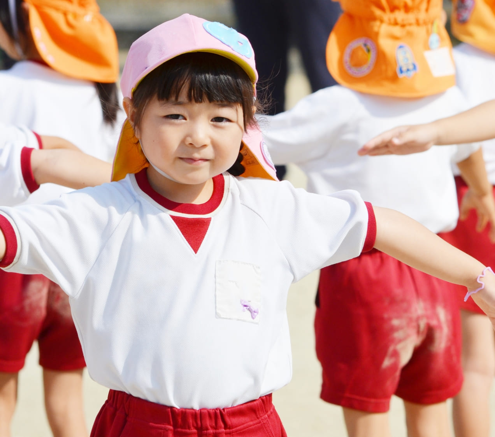
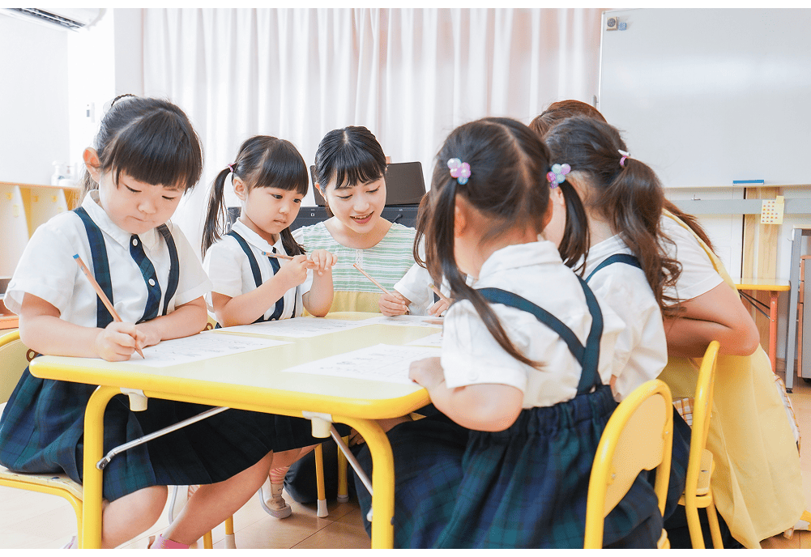
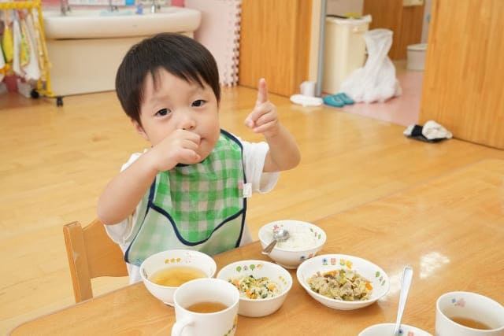
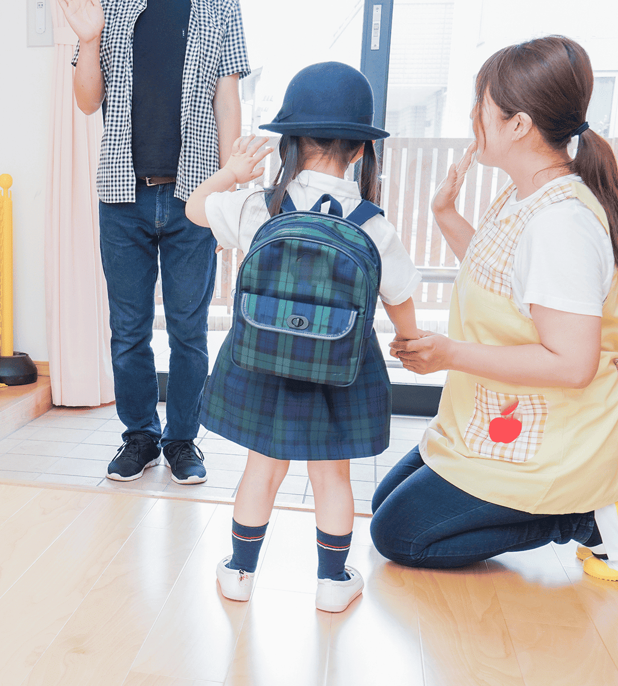

広がる自然の中で、 好奇心の芽がすくすくと育つ。 ひとりひとりが違うから、 あたたかい出会いの中で、 子どもたちは未来へと 羽ばたく豊かな力をつけます。 つむぎのもり幼稚園で、 かけがえのない毎日を 一緒に過ごしませんか？

笑顔いっぱいの「おはよう！」で一日が始まります。登園後は、自由に遊びながら一日をスタートします。
広い園庭で体を動かしたり、自然の中で発見をしたり。その後は、みんなで集まり元気にご挨拶です。
製作活動、絵画、リトミック、園外保育など、その日のテーマに合わせた活動で、創造力や協調性を育みます。
みんなで食べる、おいしい手作り給食。旬の食材を使い、栄養バランスを考えたメニューです。
園庭で自由に遊んだり、室内で制作活動をしたりします。
未満児さんは午睡の時間で体を休めます。
楽しかった一日を振り返り、ご家庭へ。
未満児さんはおやつを食べたり、引き続き遊びます。
延長保育のお子様は、引き続き室内で遊びながら保護者の方のお迎えを待ちます。


おうちの方の笑顔もわたしたちの願いです。
子育てのよろこびも悩みも、ひとりで抱え込まずに。
地域と手を取り合いながら、安心して過ごせるつながりを
大切にしています。